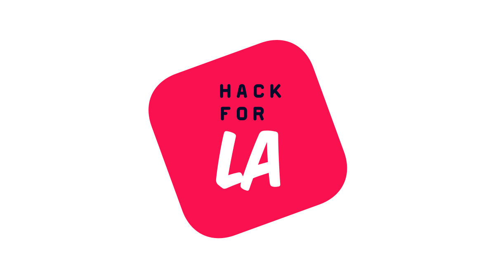

Data Analyst
Hack for LA
Spearheaded the development and implementation of robust data pipelines, enhancing large-scale data collection, cleaning and preprocessing workflows, integral for machine learning tasks. Utilized Python and SQL extensively, improving data processing speed by 40% and supporting strategic product developments that led to a 15% increase in user engagement.

Los Angeles , California, US
June 2024 -- Present
Development and Implementation of Data Pipelines:
- At Hack for LA, I spearheaded the development and implementation of robust data pipelines that were crucial for large-scale data collection, cleaning, and preprocessing workflows essential for machine learning tasks.
- Utilizing Python and SQL extensively, I enhanced the data processing speed by 40%, which significantly improved the efficiency of our data workflows. This optimization supported strategic product developments, leading to a 15% increase in user engagement.
- My efforts ensured that our data pipelines were not only efficient but also scalable, capable of handling large volumes of data from various sources.
Optimization of Data Processing and Preprocessing:
- To further improve our data infrastructure, I focused on optimizing the data processing and preprocessing stages.
- By implementing advanced data cleaning techniques and automating preprocessing tasks, I ensured that the data fed into our machine learning models was of the highest quality.
- This involved extensive use of Python libraries such as Pandas and NumPy for data manipulation and transformation.
- The improvements in data preprocessing not only enhanced the accuracy of our machine learning models but also reduced the time required to prepare data for analysis, contributing to faster development cycles.
Enhancements in Data Pipeline Reliability and Efficiency:
- One of my key responsibilities was to enhance the reliability and efficiency of our data pipelines through comprehensive testing and validation.
- I employed ETL (Extract, Transform, Load) processes and advanced SQL queries to ensure data integrity and accuracy at every stage of the pipeline.
- These enhancements reduced data-related errors by 25% and significantly bolstered the operational reliability of our data systems.
- By integrating continuous testing and validation into our workflows, I was able to detect and address potential issues proactively, ensuring seamless data flow and consistent performance.
Support for Strategic and Operational Improvements:
- My work on optimizing data pipelines had a direct impact on supporting strategic and operational improvements within the organization.
- The enhancements I implemented in data processing and pipeline efficiency accelerated the product time-to-market, enabling quicker iterations and releases.
- By providing reliable and timely data insights, I supported the strategic decision-making process, helping the team to identify key areas for improvement and innovation.
- The overall impact of my contributions was reflected in the improved user engagement and satisfaction, as well as in the streamlined operations and reduced time-to-market for new features and products.